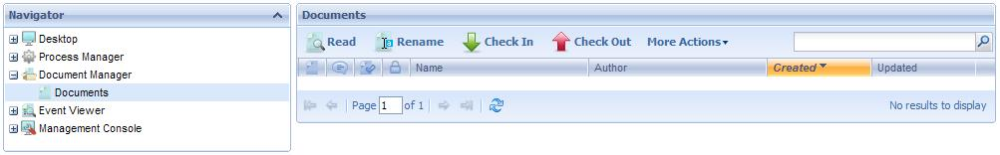
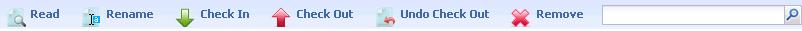
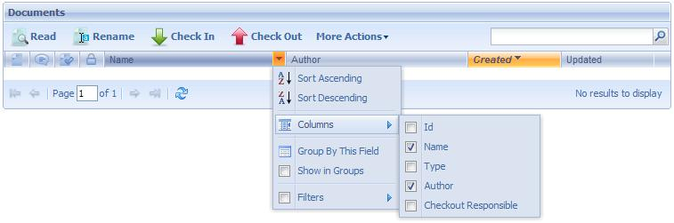

Through this application, a process administrator user can visualize all the documents that were created in the system. The following figure shows the Documents Manager interface:

The following sections describe the different components making up this application.

- Read: This option allows to read the document.
- Rename: This option allows to rename the docuement.
- Check In: This option allows you to upload new document versions to the document repository of the workflow system.
For this action to be available, two conditions have to be met:
The document type must have the Change action enabled in the task where the Work with Documents was executed.
The user who wants to upload the new document version must have previously executed the Change Document action.
Once a user uploads a new version of a document to the repository, it is unlocked and it can be changed by other users.
- Check Out: This action downloads a copy of the last document version in the user PC, which will be used to perform the modification.
When a user executes this action on a document, the latter is locked for the exclusive use of the user that executed the Modify Document action. This implies that other users will not be enabled to modify the document until the modification is completed through the Check in action.
A document will have this action enabled only if the type of document it belongs to has the modification action enabled in the task where Work with Documents was executed.
-
Undo Check Out: It allows to indo the check out action.
-
Remove: This option allows deleting documents from the documents repository of the workflow system. This means that every existing version of the documents will be physically deleted from the repository.
A document will have this action enabled only if the type of document it belongs to has the Delete action enabled in the task where Work with Documents is being executed.

Document Format: This column shows the format of each document through the icon identifying it.
Comments: This column will display the icon, which will allow the user to view the comments associated with the document.
Digital Signature: When a document has been digitally signed, this column gives access to a dialog with details of the digital signature and the certificate used to sign the document.
Locked: This column shows whether the document is locked by a user to modify it. Bear in mind that when a user executes the Modify action on a document, it will remain locked until the user completes the modification.
- Sort Ascending: It allows to sort the documents by the name of the column selected. From A to Z.
- Sort Descending: It allows to sort the documents by the name of the column selected. From Z to A.
- Columns: It allow to select the columns wanted to be visible.
- Id: Document Id
- Name: Document name
- Type: It shows the document type. Be careful not to confuse the type with the format. Formats may be Word, Excel or PDF, among other, while document types are exclusive for each workflow application.
- Author: User that was the author of a document. This column will always show the desktop user.
- Checkout Responsible: The user that check´s in the document.
- Group by this field: It allows to group de documents by the column selected
- Show in groups: It allows to group the documents by the column selected.
- Filters: It allows to filter the documents.
For an overview of GXflow client refer to the GXflow Client General Structure section.
|